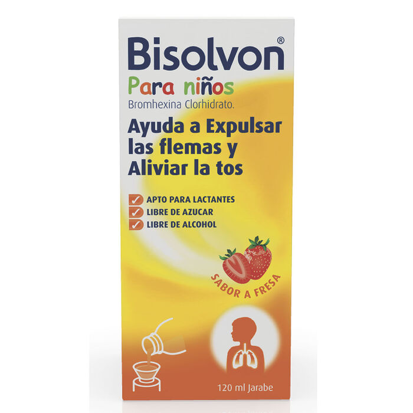
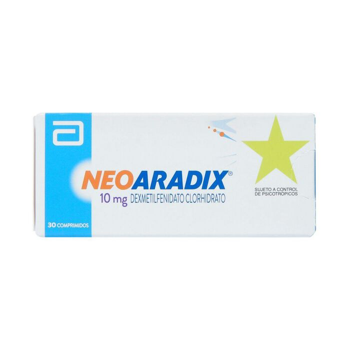
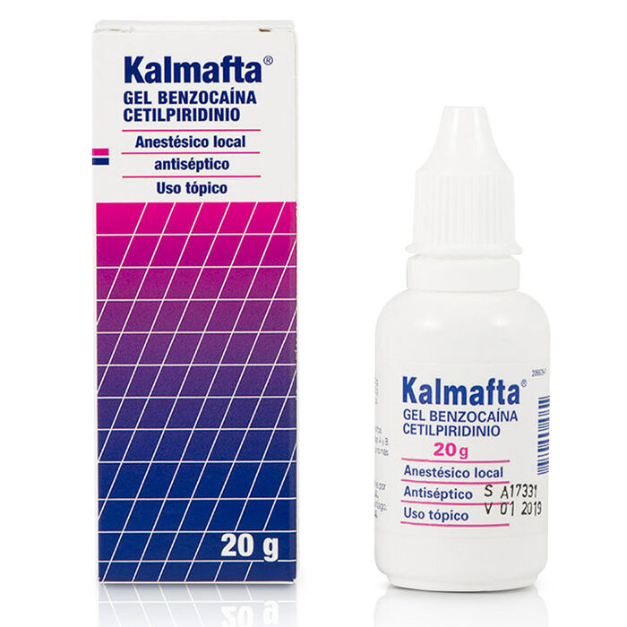
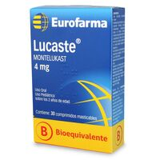
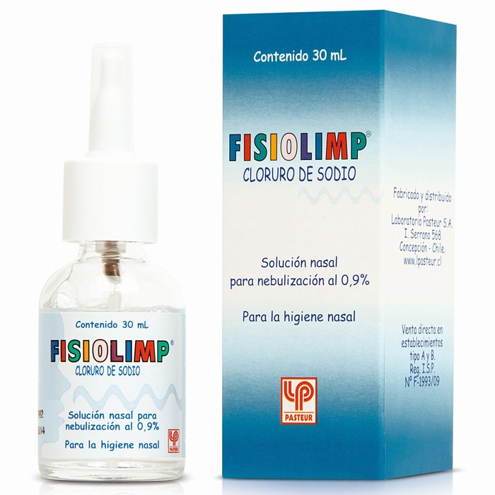

LOS MAS VENDIDOS
Bisolvon Bromhexina 4 mg / 5 mL Jarabe 120 mL
Mucolítico-expectorante en: bronquitis y traqueobronquitis agudas, crónicas y
asmatiformes; bronquitis enfisematosa y bronquiectasia; neumoconiosis y neumopatías
crónicas inflamatorias; asma bronquial. Profilaxis pre y postoperatoria de
complicaciones broncopulmonares.
Q 150.00
Neoaradix Dexmetilfenidato 10 mg 30 Comprimidos
Estimulante del sistema nervioso central, indicado para el tratamiento del trastorno
por déficit atencional con hiperactividad en niños a partir de los 6 años de edad.
Q 150.00
Kalmafta Benzocaina 5% Gel Tópico 20 gr
 Alivio de dolor e irritación de la boca y garganta que acompaña a
procesos irritativos. Cetilpiridinio: derivado del amonio cuaternario,
ejerce su acción antiséptica por ser un surfactante de tipo catiónico,
alterando la permeabilidad de la membrana microbiana.
Q 150.00
EUROFARMA Lucaste Montelukast 4 mg 30 Comprimidos Masticable
 Se usa para prevenir sibilancia, dificultad para respirar, opresión
en el pechoy tos causada por asma en adultos y niños mayores de 12 meses de edad.
Montelukast también se usa para prevenir broncoespasmo (dificultad para respirar)
durante el ejercicio en adultos y niños mayores de 6 años de edad.
Q 150.00
Fisiolimp Cloruro De Sodio 0,9% Solución Nasal 30 mL
Está indicado en la higiene y lavado de las fosas nasales en adultos y niños,
cuando las condiciones fisiológicas lo requieran: congestión nasal, irritación nasal,
ardor, obstrucciones, resfríos, coriza y heridas nasales.
Q 150.00